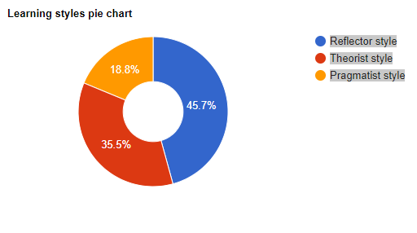

Erxun Liu (Jason)
S3693097
Hi my name is Erxun Liu, And my English name is Jason. I’m from China. This is my first year in RMIT after i finished foundation in La trobe Uni. I am currently studying for a three-year Bachelor degree in IT, My hobbies are all about cars, models and video games. Also I love aviation. My knowledge of computer is because of my interest in computer games. I like modding games when i was a kid. An interesting thing about me is I got a 1998 Toyota supra. This one is same as Fast & Furious. I love it so much.
As mentioned before, I’m interest in computer games when i was a kid. Than I’m starting create mod for minecraft. During this time, I have learning something with java. The reason why I choose to come to RMIT because some of my friends are also studying at RMIT. Because of their recommendation and also i want to study something with computer. I hope I can learn the skills I need in the future to become a qualified technician when I get to the work.
My ideal job is to become a software developer (link text). Software developers are a kind of programmer. There job is generally is analyze users' needs and then design, test, and develop software to meet those needs. Recommend software upgrades for customers' existing programs and systems. This make it has a clear objective. And another reason that appeals to me is because this work often work with a team. I like teamwork when i in the school. But this work need a lot of experience with python, java and API, And I have almost no experience in this area now. This is reason why I need to study hard at RMIT for three years to enrich my knowledge in this area.

First from web (link text), My personality is INFP-T, It’s mean Turbulent Mediator.
The other one test shows i got Reflector learning style learning.
